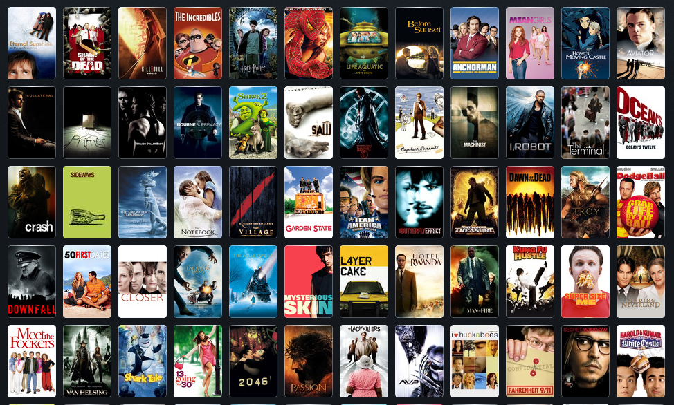

This is a very special project for me for many reasons. Suicide is a social issue that needs to be addressed through communication, but instead it is neglected, stigmatized and considered taboo. I do not aim to solve this problem but I do believe in the power of technology and, specially, in the power of data, so I consider this a first personal step towards using technology and its power to address real problems and pain.
Datasets:
-https://databank.worldbank.org/reports.aspx?source=2&series=SP.POP.TOTL&country=#>
-https://www.kaggle.com/datasets/russellyates88/suicide-rates-overview-1985-to-2016.


In this project I built a couple of visualizations, such as a map in which I show the percentage of the population infected by country, a timeline that shows the average of infected population in the selected country since January 2020 and a projection towards November 2023 and a comparison between the selected country and global cases, deaths and percentage of deaths over infections.

This is a visualization I assembled for a course of Tableau and Data Analytics. The dataset used contains various types of incidents occurred in London from January 2015 to September 2018. The idea of the project is to find the way to make it easier for the user (some decision-maker of the company) to read the information and therefore to make better choices. For that reason, I decided to organize the data based on the "Incidents by borough", which the user can select and visualize the type of incidents, the incidents over time, incidents by route, incidents by season and finally, the incident treemap, which displays some other facts about the incident, such as the victim's gender and the type of accident.
In this project I wanted to explore a relatively large dataset of Covid 19, so I believed it would be interesting to create queries on an international, regional (South America) and local (Argentina) scale of infections. The queries made here were used to assemble the visualizations of the Tableau Project of Covid 19 displayed previously.

This is a Python project, in which I wanted to show, on one hand, the correlation between the budget of movies and its revenue, and on the other hand, the correlation between the producer company and the movies revenue. My hypothesis was that both correlations would be possitive. Find out if I was right!

In this project I just wanted to clean the data of a dataset with SQL. This is one of the most important steps in analyzing data, because if the data is not properly cleaned, it will distort the information you can gather from it. So don't forget to clean your data!